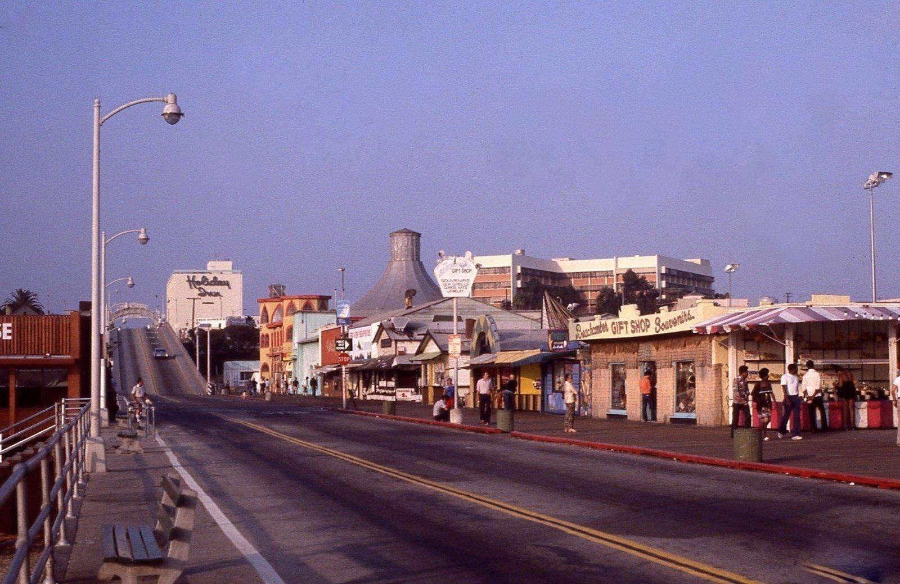
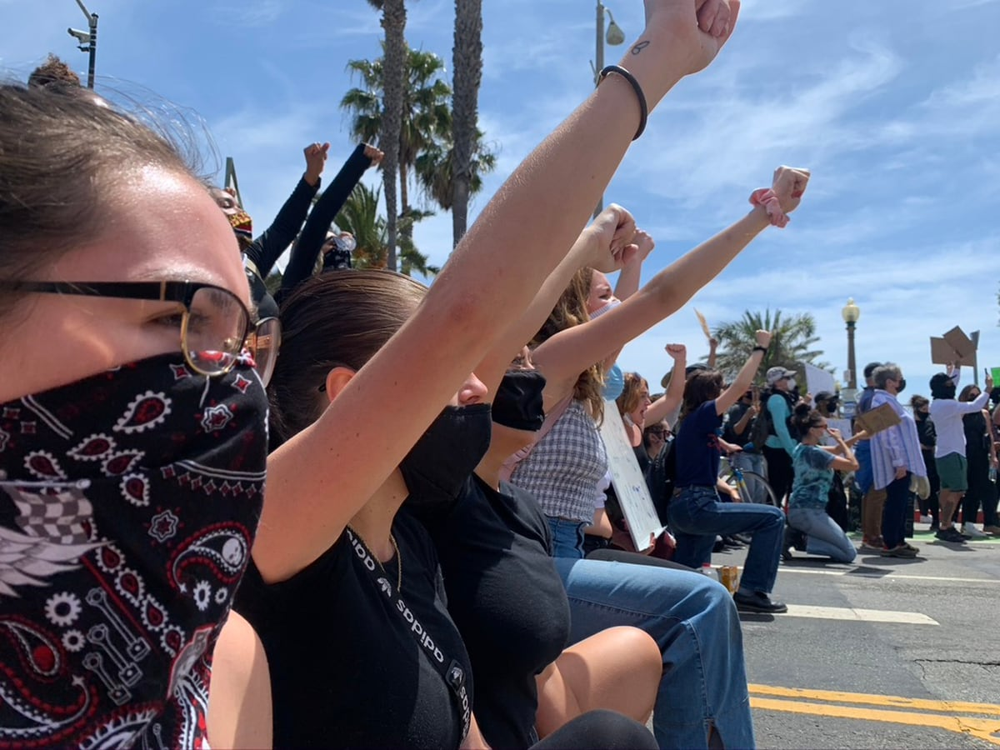
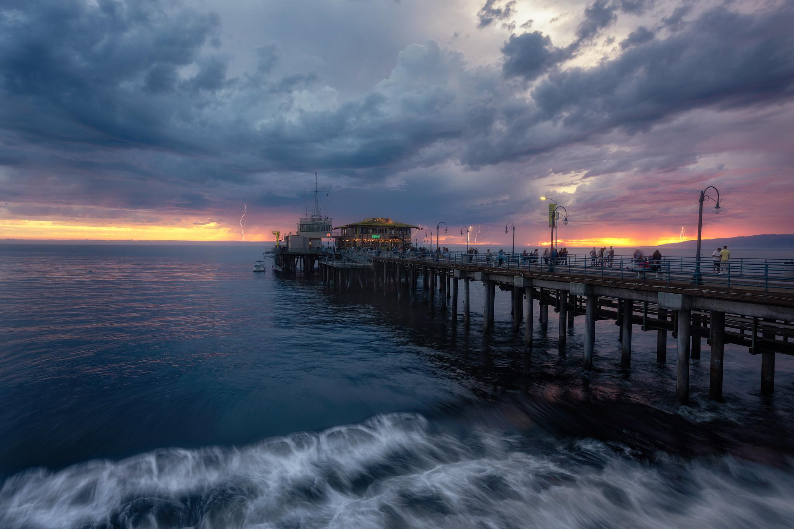
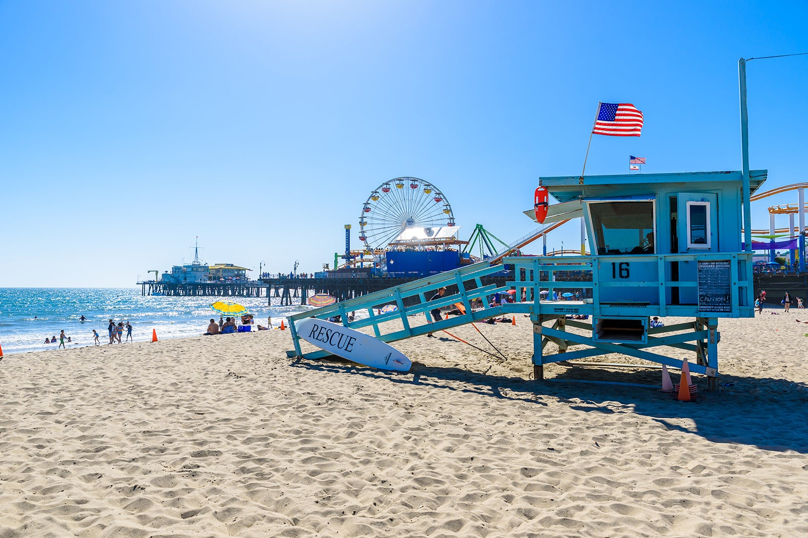
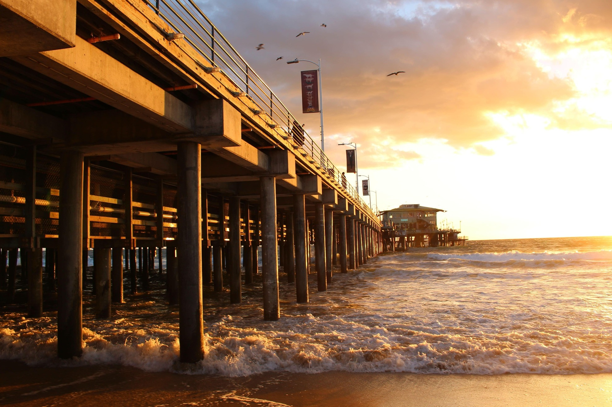

Ouverte pour la première fois le 9 septembre 1909 par la municipalité, elle était la seule implantée sur la côte ouest des États-Unis. Elle était située sur la droite de la plage de Santa Monica et offrait une magnifique vue sur l'Océan Pacifique. À ce moment-là, Santa Monica Pier commençait à avoir de nombreux visiteurs récurrents. Par conséquent, cette célébrité naissante a attiré Charles Looff, convaincu du potentiel que possède le lieu. Il est ainsi à l'origine de la construction des montagnes russes du Pacific Park, installé en 1916 dans l'enceinte de la jetée.
1909 - L'origine

1972 - Les polemiques

Au cours des années 60, plusieurs projets visant à détruire le lieu ont émergé. Ainsi, les habitants de Santa Monica se sont rassemblés en 1972 pour créer le mouvement "Save the Pier". Malgré la difficulté que subissait la jetée, cela a redynamisé son image auprès des visiteurs et à l'international. Ce mouvement a également permis à l'hippodrome et au carrousel d'être classé en tant que monuments historiques du comté de Los Angeles.
1983 - Les catastrophes

Santa Monica Pier a subi quelques événements naturels conduisant à sa destruction. Le premier était en 1930 où les fameuses montagnes russes "Blue Streak Racer" ont été démolies suite à des conditions météorologiques extrêmes. Malheureusement, en 1983, un autre désastre est arrivé. De fait, une tempête sans précédent a détruit plus d'un tiers du lieu. Les habitants se sont une nouvelle fois mobilisés pour réparer Santa Monica Pier en la rendant plus solide et durable dans le temps.
1996 - La renaissance

Après une dizaine d'années de fermeture du Pacific Park, Santa Monica Pier a connu une véritable ascension grâce à l'implantation d'une grande roue. Cette dernière est très rapidement devenue un symbole de la ville, tout en étant la seule au monde fonctionnant grâce à l'énergie solaire. À l'heure actuelle, Santa Monica Pier compte plus de 9 millions de visiteurs par an, un nombre colossal même pour une icône internationale.
